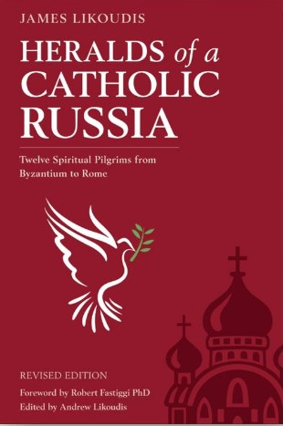

NEW! Second Revised Edition
HERALDS of a CATHOLIC RUSSIA
Twelve Spiritual Pilgrims from Byzantium to Rome
A Book by Dr. JAMES LIKOUDIS
| TITLE | HERALDS of a CATHOLIC RUSSIA Twelve Spiritual Pilgrims from Byzantium to Rome |
| PUBLISHER | Blue Army Press Publishing |
| AVAILABILITY |
By contacting "Shop Fatima" Publishing on the home link above, or can be purchased directly by clicking this link at Shop Fatima Publishing |
| DIMENSIONS | Format: Paperback only – Pages 210 – Size 6x9 |
| PRICE | $19.95 each – (Publishing date Dec. 20, 2023) |
| The accounts of 12 Eastern Orthodox
re-verting to the Catholic Church. By James Likoudis with essays selected and edited by Andrew Likoudis |
 |
A groundbreaking work exploring the intellectual journeys of twelve Eastern Orthodox figures as they sought to reconcile themselves completely to the Church established by Christ, fully subsisting in the Catholic Church. This book offers valuable insights into the complexities of ecumenism and the ongoing dialogue between the Orthodox and the Catholic Church. Dr. Likoudis draws on his extensive knowledge and experience as a convert himself to shed light on the spiritual quests of notable Russian and Russian-born figures such as Vladimir Soloviev, Madame Swetchine, and Ivan Gagarin, and many others, exploring the tensions and historical challenges they faced, as well as the general challenges present in Catholic-Eastern Orthodox relations. The book also touches on the conversion of Russia prophesied by Our Lady at Fatima, Portugal, to the three shepherd children in 1917. Likoudis provides insights into the historical and theological context of the 1984 consecration of Russia to the Immaculate Heart of Mary by Pope St. John Paul II.
| By Land Mail | 593 Allison Dr., Ann Arbor, MI 48103 |
| By E-Mail |
| ENDORSEMENTS AND REVIEWS OF THIS BOOK |
|
By Aidan Nichols By John-Mark L. Miravalle, SThD |
By Rev. Ray Ryland, PhD, JD By Timothy S. Flanders |

About Dr. James Likoudis
James Likoudis is an expert in Catholic apologetics. He is the author of several books
dealing with Catholic-Eastern Orthodox relations, including his most recent "The Divine
Primacy of the Bishop of Rome and Modern Eastern Orthodoxy: Letters to a Greek Orthodox
on the Unity of the Church." He has written many articles published by various religious
papers and magazines.
He can be reached at: , or visit Dr. James Likoudis'
Homepage